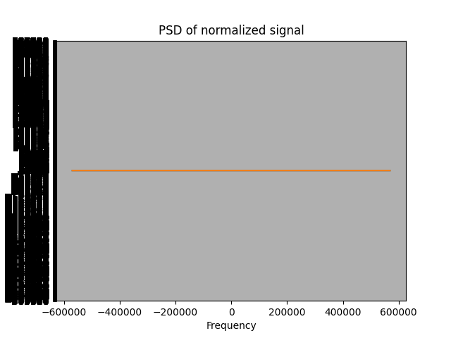
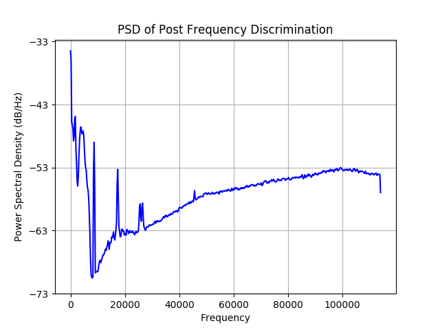
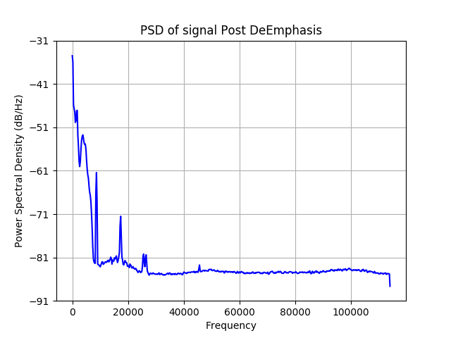

import numpy as np
import matplotlib.pyplot as plt
import scipy.signal as signal
dir = "/opt/Downloads"
extract_data = np.fromfile(dir + "/fm1.dat",dtype="uint8")
interleavedData = extract_data[0::2] + 1j*extract_data[1::2]plt.title("SpectoGram of 'signal' loaded from file")
plt.xlabel("Time")
plt.ylabel("Frequency")
plt.specgram(interleavedData, NFFT =1024, Fs=1140000)
plt.savefig('compscieng_app60wave_07.png')plt.title("PSD of interleaved Data")
plt.psd(interleavedData, NFFT=1024, Fs=1140000)
plt.savefig('compscieng_app60wave_08.png')
calculate_range = max(interleavedData) - min(interleavedData);
data = (interleavedData - min(interleavedData))/ calculate_range
x1 = (data*2) - 1
plt.title("SpectoGram of signal post normalization")
plt.xlabel("Time")
plt.ylabel("Frequency")
plt.specgram(x1, NFFT =1024, Fs=1140000)
plt.savefig('compscieng_app60wave_09.png')
plt.title("PSD of normalized signal")
plt.psd(x1, NFFT=1024, Fs=1140000)
plt.savefig('compscieng_app60wave_10.png')
Fs = 1140000
fc = np.exp(-1.0j*2.0*np.pi* 250000/Fs*np.arange(len(x1)))
x2 = x1*fc
f_bw=200000
Fs=1140000
n_taps=64
lpf= signal.remez(n_taps, [0, f_bw, f_bw +(Fs/2-f_bw)/4,Fs/2], [1,0], fs=Fs)
plt.xscale('log')
plt.title('Filter Frequency Response')
plt.xlabel('Frequency')
plt.ylabel('Amplitude')
plt.margins(0,1)
plt.grid(which='both',axis='both')
plt.plot(w, 20*np.log10(abs(h)))
plt.savefig('compscieng_app60wave_11.png')
w,h = signal.freqz(lpf)
x3 = signal.lfilter(lpf, 1.0, x2)
plt.psd(x2, NFFT=1024, Fs=1140000, color="blue") # original
plt.psd(x3, NFFT=1024, Fs=1140000, color="green") # filtered
plt.title("PSD of output signal from LPF Vs Original Signal")
plt.savefig('compscieng_app60wave_12.png')
dec_rate = int(Fs/f_bw)
x4 = signal.decimate(x3, dec_rate)
Fs_x4 = Fs/dec_rate
plt.psd(x4, NFFT=1024, Fs=Fs_x4, color="blue")
plt.title("PSD of deimated signal")
plt.savefig('compscieng_app60wave_13.png')
y = x4[1:] * np.conj(x4[:-1])
x5 = np.angle(y)
plt.psd(x5, NFFT=1024, Fs=Fs_x4, color="blue")
plt.title("PSD of Post Frequency Discrimination")
plt.savefig('compscieng_app60wave_14.png')
d = Fs_x4 * 75e-6 # Calculate the # of samples to hit the -3dB point
r = np.exp(-1/d) # Calculate the decay between each sample
b = [1-r] # Create the filter coefficients
a = [1,-r]
x6 = signal.lfilter(b,a,x5)
plt.psd(x6, NFFT=1024, Fs=Fs_x4, color="blue")
plt.title("PSD of signal Post DeEmphasis")
plt.savefig('compscieng_app60wave_15.png')
d = Fs_x4 * 75e-6 # Calculate the # of samples to hit the -3dB point
r = np.exp(-1/d) # Calculate the decay between each sample
b = [1-r] # Create the filter coefficients
a = [1,-r]
dec_rate = int(Fs/f_bw)
x7=signal.decimate(x6,dec_rate)
x7*= 10000 / np.max(np.abs(x7)) # scale so it's audible
x7.astype("int16").tofile("radio.raw")os.system("aplay radio.raw -r 100000.0 -f S16_LE -t raw -c 1")os.system("aplay radio.raw -r 45600 -f S16_LE -t raw -c 1")Kaynaklar
[1] The Basic Facts About Radio Signals, https://www.windows2universe.org/spaceweather/wave_modulation.html
[2] Veri 1
[3] Veri 2
[4] Scher, How to capture raw IQ data from a RTL-SDR dongle and FM demodulate with MATLAB,http://www.aaronscher.com/wireless_com_SDR/RTL_SDR_AM_spectrum_demod.html
[5] EE123: Digital Signal Processing, http://inst.eecs.berkeley.edu/~ee123/sp14/
[6] Fund, Capture and decode FM radio, https://witestlab.poly.edu/blog/capture-and-decode-fm-radio/
[7] Fund, Lab 1: Working with IQ data in Python, http://witestlab.poly.edu/~ffund/el9043/labs/lab1.html
[9] Swiston, pyFmRadio - A Stereo FM Receiver For Your PC, http://davidswiston.blogspot.de/2014/10/pyfmradio-stereo-fm-receiver-for-your-pc.html